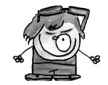

Noam Chomsky (1928-)
Amerikalı eğitimci, dilbilimci, teorisyen... İngiltere’de yapılan bir araştırma sonucu dünyanın en saygın adamı ilan edilen, “Yahudilerin nefret ettiği Yahudi” olarak bilinen kişi.
Sadece bir düşünce adamı ve teorisyen değil aynı zamanda bir aktivisttir. Bu yönüyle özellikle kitle psikolojisini etkilemek konusunda nam salmış yaşayan önemli kanaat önderlerindendir.
Babası İbranice öğretmeniydi. Noam ününü dil bilimi alanında kazandı. Dil biliminin bazı tarihsel ilkelerini İbranice uzmanı olan babası William’dan edinmiştir. Dili hem biyolojik hem de psikolojik bir bakış açısından anlamaya çalışmıştır. Dil öğrenmede 3-10 yaşın kritik bir dönem olduğunu, bu yaştan sonra dil öğrenmenin zorlaştığını söyler. Dünyanın her yerinde bütün bebekler hemen hemen aynı dönemde konuşmaya başlarlar. Demek ki zihnimizde bir dil alanı var ve dil sonradan öğrenilmiyor, doğuştan geliyor, der. Böylece Chomsky görsel okuryazarlık kuramının gelişimine de büyük katkı sağlamıştır.

Amerikan politikalarına ve medyaya eleştiri getiren en tanınmış isimlerdendir. Bilgi Üniversitesi’nde yaptığı konuşma esnasında kendisine sorulan “Uluslararası terör nedir?” sorusuna “ABD ordusu” diye cevap vermiştir.
Antimedya hareketin de en önemli temsilcilerinden biridir.
Londra ve Chicago Üniversitesi tarafından Onursal Doktorluk ile ödüllendirilen Chomsky, Amerikan Psikoloji Derneği’nin “Seçkin Bilimsel Katkılar Ödülü”, “Temel Bilimlerde Kyoto Ödülü”, “Helmholtz Madalyası”, “Dorothy Eldridge Barış Ödülü”, bilişim dalındaki “Ben Franklin Madalyası” gibi ödüllerin de sahibidir. Chomsky, yaşayan düşünürler içinde en çok atıfta bulunulmuş kişi unvanını da elinde bulundurmaktadır.
Ne demiş Chomsky…
• Bir toplum ne kadar özgür olursa güç kullanmak o kadar zorlaşır.
• Entelektüellerin binlerce yıldır süregelen görevi insanları pasif itaatkâr cahil ve güdümlü hâle getirmektir.
• Eşitlik olmadan demokrasi olmaz.
• Demokrasi, içindeki insanların oyuncu değil izleyici olduğu bir sistemdir.
• Yönetim ne halkındır, ne halk tarafından yapılır, ne de halk içindir.
• Halk özgürleştikçe korku ve propagandaya daha çok başvurulur.
• Medya gündem yaratır, bunu yaparken de güçlü bir zümreye hizmet eder. Amacı da insanların daha az düşünmesini sağlamaktır.
• Propaganda sanatı insanlara güçsüz, yalıtılmış, diğerlerinden kopmuş hissini vermekten ibarettir.
• Herhangi bir yerde iktidar mekanizmaları söz konusu ise, orada mutlaka şiddet de vardır.
• Meşruiyetini ispatlayamayan her türlü otorite gayrimeşrudur ve devrilmelidir.
• Kanunları severim faydalıdırlar, ama uygulanmadıklarında işe yaramazlar.